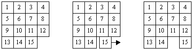

| ECE 291 |
Computer Engineering II |
Lockwood, Spring 1998 |
Machine Problem 3: The "15-Puzzle"
|
Assigned:
|
Tuesday, February 24, 1998 |
|
Due Date:
|
Tuesday, March 10, 1998 |
|
Purpose:
|
Text-mode video, Mouse control, Stack usage, GUI programming |
|
Points:
|
50 |
 Figure 1. The ECE 291 15-Puzzle
Figure 1. The ECE 291 15-Puzzle
About this Machine Problem
In the 1870's a man by the name of Samuel Lloyd shocked and amazed a simple-minded
world with an equally simple-minded puzzle. His puzzle consisted
of a wooden box in which there were 15 numbered blocks. The blocks
were placed at random into the box, and the goal was to shift the blocks
around until the blocks lined up sequentially with the '1' block in the
upper left hand corner of the board. This puzzle has become what
is known as the "15-Puzzle." After taking the world by storm a mere
century ago, the classic 15-Puzzle now lives out its mundane life as a
cheap corporate giveaway at the Engineering EXPO. In this machine
problem, we will attempt to restore the 15-Puzzle to its former glory.
How the Puzzle Works
The operation of the puzzel is best explained using the concepts
your learned in ECE340 (yes, really, the semiconductor class).
Fundamentally, Our 15-puzzle works not by moving numbered tiles
around, but by moving the hole around. When the user clicks
on the 15 tile (Figure 2), the tile slides to the right to fill in the
gap, right? Wrong. Think of this as the hole sliding over to
the left to fill in the space previously occupied by the 15 tile.

Figure 2.
By thinking of the problem as "moving the hole around" instead of "moving
the tiles around," we simplify the coding experience. The core of
this functionality is the MoveHole subroutine. This routine
accepts a direction as input, and attempts to move the hole in the specified
direction. If the direction is invalid, MoveHole returns an
error code. An example of an invalid move would be attempting to
move the hole down on the puzzle in figure 2.
Although we know
that it is the hole that is moving, the user sees the tile
sliding into the place previously occupied by the hole. MoveHole
accomplishes this by repeated calls to the DrawTile subroutine.
DrawTile simply draws the specified tile at the specified location.
The "animated" effect is achieved by repeatedly drawing the tile, each
time moving it over by one character until it reaches its destination.
Calling the Delay subroutine each time the tile is drawn slows the
animation down. Delay simply burns clock cycles so that the
animation appears at human-detectable speed. Without some sort of
delay, the animation would be instantaneous to the human eye.
The state of the game board is stored in the Board variable. This
is simply an array of bytes indicating which tiles are in each of the 16
possible positions (numbered 0...15). The hole is represented as
tile 0. The variable HolePtr always contains the position
of the hole. In addition, the Moves variable always contains
the number of moves the user has made.
The mouse control is implemented
in the MouseControl subroutine. Using the mouse as an input
device is straightforward, and the details are contained in the lab manual.
MouseControl returns a value indicating which tile or button was
clicked. The Main routine (given) takes this value and decides what
action to take. If a tile is clicked, Main calls the CheckMove
routine, which checks if the click was valid, and if so, calls MoveHole
to effect the desired move. Note that the user should be able to
click on any tile in line with the hole. In figure 2 (farthest to
right), clicking on the 3 tile should cause the 11, 7, and 3 tiles to move
downward. The full details of these subroutines are given below.
The Autosolve "Algorithm"
When complete, your machine problem will amaze your non-engineering
friends with its ability to automagically solve itself.
Of course, we engineers know that
there is no magic involved. Rather, this puzzle will use the stack
to perform the amazing autosolve feat. Whenever a move is made,
the opposite move is pushed onto the stack.
The number of moves currently residing
on the stack is kept track of using the MovesPushed variable.
To solve the puzzle, the AutoSolve subroutine simply pops the moves
off of the stack and calls MoveHole. The Shuffle routine
resets the puzzle and then moves the hole in random directions. The
number of times the hole is moved is specified by ShuffAmount.
Your Shuffle routine should take care not to move the hole in one
direction and then follow that by moving the hole right back to where it
started again. That sort of behavior is not very impressive and it
is annoying to watch.
The randomness is achieved by generating random
numbers with the Random routine.
The method for generating random numbers is outlined below.
Each time Shuffle moves
the hole, the opposite move is pushed onto the stack for later retrieval
by the AutoSolve routine. In this manner, the puzzle can solve
itself after being shuffled and then played with. Be careful when
using the stack to store moves. You will be using the same stack
that the CPU uses to store return addresses for subroutine calls.
Review your lecture notes on stack usage.
A Few Other Things
- The Reset routine will restore the board to its original, in-order
configuration. Reset will also pop all existing moves off
of the stack.
- DrawBoard is the routine that will draw all
of the static elements of the Graphical User Interface. Buttons,
title bars, borders, and backgrounds are all "static" elements of
the display. These do not change and generally only need to be drawn once.
DrawBoard
also draws the current arrangement of tiles, specified in the Board
array. Your puzzle game will display the current number of moves
the user has made. It will also display the current setting of the
DelayC constant.
- UpdateScreen is the routine which
draws these displays into place. UpdateScreen is called any
time the Moves variable or the DelayC variable changes.
Play With It
The best way to get the feel for how the game should operate is to play
with the library version of the game. Your version must implement
all the features of the library version. If you have a question as
to how your program should behave, look at the library code and have your
version do what it does. You may use some degree of artistic license
in your version, but be aware that if you change the locations of buttons
or tiles, your code will not interoperate properly with the library code.
The best strategy is to place all of your screen elements in the same places
as the library code.
Efficiency
Many of the operations of this Machine Problem can be implemented most
efficiently with loops, lookup tables, and bit-tricks. In this case,
efficient = simple. Many of those same operations can be very tedious and
time-consuming to program if you do not choose efficient ways to implement
them. We will not explicitly test the speed of your code for this
MP, but the benefit derived from efficient coding is that you will have
many more free-time hours to pursue leisure activities such as playing
with the 15-puzzle that some company gave out free at the last EXPO.
80x50 Text Mode Video
You will be using text-mode video graphics to display the game on the screen.
You will be using direct video memory writes as described in the lecture
notes. Using 80x50 text mode is a simple extension of what you know
about 80x25 text mode. You simply double the size of the memory page
to which you will write data.
Data Structures
-
A few variable have been defined in the program framework. Use them.
-
Moves: keeps track of the number of moves the used has made.
This must be updated every time MoveHole returns successful.
-
MovesPushed: tracks the number of moves that have been pushed to
the stack. This is not necessarily equal to the Moves variable.
-
HolePtr: always contains the current position of the hole.
A position is a number 0...15 representing the offset into the Board array
where the hole is stored.
-
Board: is an array of bytes representing the state of the board.
Each byte position contains a number 0...15 representing which tile is
in that position. For example, if the 6 tile is located in the lower
left hand corner of the board, then Board[12]=6. The hole is represented
as tile number 0.
-
RandVal: contains the seed used by the random number generator.
-
DelayC: contains the delay constant. This delay constant is
a number 1...20.
-
A few constants have also been defined. Please see the given code
(MP3.ASM) for documentation on these constants. Use them.
Procedures
-
This assignment has eleven procedures. You will receive credit by
replacing each of the eleven procedures listed below with your own code.
-
Experiment with the given library code to gain a full understanding of
how the program works.
-
You program should exactly match the functionality of the library subroutines.
Do not violate the I/O specs given.
-
All subroutines must preserve the value of any registers that they modify,
not including registers used for function output.
-
Library routines only call other Library Routines. Keep this
in mind when testing your code with the given library code.
MouseControl
-
Purpose: To get user input via the mouse.
-
Inputs: none
-
Outputs: DX - returns values according to the following table:
|
Value
|
Description
|
| TileClicked |
returned if a tile on the board was clicked |
| ShuffleClk |
returned if the Shuffle button was clicked |
| SolveClk |
returned if the Solve button was clicked |
| SolveOnceClk |
returned if the Solve Once button was clicked |
| DelayUpClk |
returned if the Increase Delay button was clicked |
| DelayDownClk |
returned if the Decrease Delay button was clicked |
| QuitClk |
returned if the Quit button was clicked |
| ResetClk |
returned it the Reset button was clicked |
-
AX: returns the position of the tile that was clicked, if a tile was clicked.
-
Notes:
-
The program will spend most of its time looping through this subroutine.
The subroutine does not return until a valid place on the screen has been
clicked.
-
Many comparisons will need to be made in this subroutine. Use the
provided constants to refer to return values or screen element locations.
See the given code for details.
-
See the lab manual for details on how to use the mouse hardware.
-
Calls: None
ResetBoard
-
Purpose: to reset the board to its ordered configuration.
This routine will reset the Board array to the ordered configuration.
HolePtr will be reset. This routine will also remove all moves currently
residing on the stack. This routine resets the Moves variable.
When ResetBoard is done, the user sees a reset screen.
-
Inputs: the stack, Board, HolePtr, MovesPushed, Moves
-
Outputs: the stack, Board, HolePtr, MovesPushed, Moves
-
Calls: DrawBoard, UpdateScreen
Shuffle
-
Purpose: to shuffle the board. This routine moves the hole
in random directions the number of times specified by the ShuffAmount constant.
The hole should never be moved in one direction and then moved right back
again. Your code must prevent this from happening. Each time
shuffle makes a valid move, the opposite move is pushed to the stack
and MovesPushed is incremented.
-
Inputs: the stack, MovesPushed, ShuffAmount
-
Outputs: the stack, MovesPushed
-
Calls: Random, MoveHole
MoveHole
-
Purpose: to move the hole. A hole is moved by sliding the
corresponding tile in the proper direction. The motion should be
animated. MoveHole checks to see if the move requested is valid,
and returns an error code if an invalid move was attempted. This routine is responsible for correctly updating the Board and HolePtr variables. Board should be updated to reflect the actual arrangement of tiles, and HolePtr should be updated to point to the new Hole locations
-
Inputs: HolePtr, Board
-
SI = the direction the hole should be moved in
|
Value in SI
|
Direction of Hole Motion
|
|
0
|
Up
|
|
1
|
Right
|
|
2
|
Down
|
|
3
|
Left
|
-
Outputs: Board, HolePtr
-
DX = 0 if success, 1 if failure
-
Notes:
-
Can you use lookup tables to make this simple?
-
This routine does not push moves to the stack.
-
Calls: DrawTile
DrawBoard
-
Purpose: Draw out all of the static elements of the display, as
well as draw out all of the tiles. This routine is called to redraw
the entire screen, including the background, the buttons, the labels, and
anything else you include in the user interface.
-
Inputs: none
-
Outputs: to screen
-
Uses: none
UpdateScreen
-
Purpose: Update the "Number of Moves" and the "Delay" displays on
the screen. This routine is called whenever Moves or Delayc is changed.
It draws the proper characters to the screen so the user can see the value
of these variable.
-
Inputs: Moves, DelayC
-
Outputs: to screen
-
Uses: none
Delay
-
Purpose: Burns CPU cycles. This routine loops through a meaningless
loop DelayC*0AFFFh times. Just sit there and loop. That's all
it needs to do. Delay is called to give the program its animated
quality.
-
Inputs: DelayC
-
Outputs: time
-
Uses: none
Random
-
Purpose: This routine generates and returns a pseudo-random number
by multiplication and addition of large prime constants to a random number.
-
Inputs: Randval memory variable
-
Outputs: AX - Random number between 0 .. 2^16-1
-
Notes: The random function is defined below
R(1) = Randval
R(i+1) = Randval = (K1 *R(i) + K2) % MaxValue
Where
-
R(i) is the random value generated in the i-th call to the subroutine.
-
Randval is a variable that holds the initial random value and is
updated with the result after each call to Random.
-
K1 and K2 are two large, prime-valued constants.
-
MaxValue = 2^16-1 (0FFFFh)
Hints & Observations
-
The first call to Random returns the original random number seed
-
Perform multiplication and division using the 16-bit unsigned operations.
-
Uses: None
AutoSolve
-
Purpose: To solve the puzzle. Autosolve solves the puzzle
by popping a move from the stack and executing that move using MoveTile.
Moves is incremented for each pop. In addition, AutoSolve should only pop and execute one move off the stack if AX=0. If AX=1, Autosolve should pop and execute all moves off the stack.
-
Inputs: stack, MovesPushed, Moves
- AX = 0 - Autosolve only pops one move off the stack, 1 - Autosolve pops all moves off the stack and executes them.
-
Outputs: a solved puzzle, Moves, MovesPushed, stack
-
Uses: UpdateScreen, MoveHole
DrawTile
-
Purpose: to draw a tile. Draw tile will draw a tile at the
specified location, with the specified number inside. Tiles should
be drawn with differing colors for visual appeal.
-
Inputs:
-
AL = # of tile being drawn (1...15)
-
BX = Offset into text mode video memory of the upper left hand corner of
the tile.
-
Outputs: A tile is drawn to the screen
-
Uses: None
CheckMove
-
Purpose: to execute a user's move. This routine takes as input
the position of the board which the user clicked on. It determines
if a valid move is available, and executed that move using MoveHole.
When the hole is moved, this routine pushes the opposite move to
the stack and updates Moves.
-
Inputs: stack, HolePtr, Moves, MovesPushed.
-
AX = the position of the board that was clicked.
-
Outputs: stack, Moves, MovesPushed
-
Uses: MoveHole, UpdateScreen
Scoring
Points are earned by replacing the library code with your own code. The
point values for each of the subroutines is listed below:
MouseControl: 8 pts.
ResetBoard: 3 pts.
Shuffle: 5 pts.
MoveHole: 8 pts.
DrawBoard: 4 pts.
UpdateScreen: 4 pts.
Delay: 1pt.
Random: 3 pts.
AutoSolve: 3 pts.
DrawTile: 3 pts.
CheckMove: 8 pts.
Preliminary Procedure
-
Copy the empty MP3 program (MP3.ASM), libraries (libmp3.lib,
lib291.lib), and Makefile from the network drive to your
home directory with the following command:
xcopy /s I:\ece291\mp3 F:\mp3
Alternatively, from home, you can download the same files as mp3.zip.
-
As with previous MPs, run NMake to build an executable program
using the given ECE291 library functions.
-
As with previous MPs, use a text editor to modify the program. As given,
the program uses LIBMP3 routines to implement all functionality. To receive
full credit for the assignment, you will need to implement each of the
subroutines described above with your own code.
-
As with previous MPs, use CodeView (CV) to debug and test your
program. Because you only receive credit for procedures that function completely
as specified, it is best to debug each routine individually.
-
By modifying a few comments, you can mix and match usage of your own code
and Library routines. You may notice that the LIBMP3 routines contain extraneous
and difficult-to-read code. They are not meant to be unassembled!
Final Steps
-
Print a copy of the MP3 grading sheet.
-
Demonstrate MP3.EXE to a TA or to the instructor.
-
Be prepared to answer questions about any aspect of the operation of your
program. The TAs will not accept an MP if you cannot fully explain all
operations of your code.
-
Handin in your program by running:
A:\Handin YourWindowsLogin
-
Print MP3.ASM
Staple the MP3 grading sheet to the front of your MP3.ASM file and
give both to the same TA that approved your demonstration.
MP3.ASM (program framework)
Study the given program framework carefully. There are many hints
in the given source code.
PAGE 75, 132
TITLE MP3:15-Puzzle Your_Name_Here Date
COMMENT *
The 15-Puzzle
ECE291: Machine Problem 3
Spring 1998 / Lockwood
Guest MP Author: Daniel Restelli
University of Illinois,
Dept. of Electrical & Computer Engineering
Ver 1.0
*
; =================== External Library Procedures =======================
; LIB291 Routines -- Use these for free
EXTRN DOSXIT:NEAR
EXTRN RSAVE:NEAR
EXTRN RREST:NEAR
EXTRN KBDIN:NEAR
EXTRN BINASC:NEAR
EXTRN MP3XIT:NEAR
; LIBMP3 routines -- Comment out and replace with your own code!
EXTRN MouseControl:NEAR
EXTRN ResetBoard:NEAR
EXTRN Shuffle:NEAR
EXTRN MoveHole:NEAR
EXTRN DrawBoard:NEAR
EXTRN UpdateScreen:NEAR
EXTRN Delay:NEAR
EXTRN Random:NEAR
EXTRN AutoSolve:NEAR
EXTRN DrawTile:NEAR
EXTRN CheckMove:NEAR
; ============================ Stack Segment ============================
stkseg segment stack
db 128 dup ('STACK ')
stkseg ends
; ============================ Program Data =============================
CSEG segment public 'CODE'
assume cs:CSEG, ds:CSEG, ss:stkseg, es:nothing
; ============================= Variables ===============================
TEXTVIDSEG EQU 0b800h
; == Use these constants in your code, if you change them,
; == your code will not work properly with the library code
BOARDSTART EQU 980 ; Starting offset of the playing board
TILEWIDTH EQU 10 ; Width of tiles
TILEHEIGHT EQU 9 ; Height of tiles
BOARDDIM EQU 4 ; Dimension of board (4x4)
SHUFFAMOUNT EQU 200 ; When shuffling board, how many moves to make
ButtonWidth EQU 16 ; The width of the control panel buttons
MAXDELAY EQU 20
MINDELAY EQU 1
; == These are the values corresponding to the different buttons
TileClicked EQU 0 ; A tile was clicked
ShuffleClk EQU 1 ; The Shuffle button was clicked
SolveClk EQU 2 ; The Solve button was clicked
SolveOnceClk EQU 3 ; The Solve Once button was clicked
DelayUpClk EQU 4 ; The > Delay button was clicked
DelayDownClk EQU 5 ; The < Delay button was clicked
QuitClk EQU 6 ; The Quit button was clicked
ResetClk EQU 7 ; The Reset button was clicked
; == These are the starting offsets of the different buttons
ShuffleLoc EQU 2034
SolveLoc EQU 2514
SolveOnceLoc EQU 2994
DelayUpLoc EQU 3480
DelayDownLoc EQU 3474
QuitLoc EQU 4274
ResetLoc EQU 1554
PUBLIC Board, HolePtr, randval, delayc, Moves, MovesPushed
Board db 01,02,03,04 ; This simple array keeps track of the state
db 05,06,07,08 ; of the board
db 09,10,11,12
db 13,14,15,00
HolePtr dw 15 ; The location of the hole
; == This is a lookup table of the starting offsets of each tile
; == location in the board.
BoardLoc dw BOARDSTART+0*160*TILEHEIGHT+0*2*TILEWIDTH
dw BOARDSTART+0*160*TILEHEIGHT+1*2*TILEWIDTH
dw BOARDSTART+0*160*TILEHEIGHT+2*2*TILEWIDTH
dw BOARDSTART+0*160*TILEHEIGHT+3*2*TILEWIDTH
dw BOARDSTART+1*160*TILEHEIGHT+0*2*TILEWIDTH
dw BOARDSTART+1*160*TILEHEIGHT+1*2*TILEWIDTH
dw BOARDSTART+1*160*TILEHEIGHT+2*2*TILEWIDTH
dw BOARDSTART+1*160*TILEHEIGHT+3*2*TILEWIDTH
dw BOARDSTART+2*160*TILEHEIGHT+0*2*TILEWIDTH
dw BOARDSTART+2*160*TILEHEIGHT+1*2*TILEWIDTH
dw BOARDSTART+2*160*TILEHEIGHT+2*2*TILEWIDTH
dw BOARDSTART+2*160*TILEHEIGHT+3*2*TILEWIDTH
dw BOARDSTART+3*160*TILEHEIGHT+0*2*TILEWIDTH
dw BOARDSTART+3*160*TILEHEIGHT+1*2*TILEWIDTH
dw BOARDSTART+3*160*TILEHEIGHT+2*2*TILEWIDTH
dw BOARDSTART+3*160*TILEHEIGHT+3*2*TILEWIDTH
; == How might you use these tables to simplify your code?
SlideDir dw -160, 2, 160, -2
SlideLen dw TILEHEIGHT, TILEWIDTH, TILEHEIGHT, TILEWIDTH
PointDir dw -4, 1, 4, -1
randval dw 3 ; random # generator seed
delayc db 3 ; delay constant
Moves dw 0 ; # of moves made
MovesPushed dw 0 ; # of moves currently on the stack
; ========================== Your Subroutines ==========================
; Uncomment and add your own code here
;MouseControl PROC NEAR
;
; RET
;MouseControl ENDP
;ResetBoard PROC NEAR
;
; RET
;ResetBoard ENDP
;Shuffle PROC NEAR
;
; RET
;Shuffle ENDP
;MoveHole PROC NEAR
;
; RET
;MoveHole ENDP
;DrawBoard PROC NEAR
;
; RET
;DrawBoard ENDP
;UpdateScreen PROC NEAR
;
; RET
;UpdateScreen ENDP
;Delay PROC NEAR
;
; RET
;Delay ENDP
;Random PROC NEAR
;
; RET
;random endp
;AutoSolve PROC NEAR
;
; RET
;AutoSolve ENDP
;DrawTile Proc NEAR
;
; RET
;DrawTile ENDP
;CheckMove PROC NEAR
;
; RET
;CheckMove ENDP
; == Main ================================================================
MAIN Proc FAR
; Initialize DS register
MOV AX, CSEG
MOV DS, AX
; Put display into 80x50 text mode
MOV AX, 1202h ; Sets to 400 line scan mode
MOV BL, 30h
int 10h
MOV AX, 3 ; Sets to 8x8 font
INT 10h
MOV AX, 1112h ; Enter text mode
MOV BL, 0
INT 10h
; Initialize the mouse hardware, Function 0000h
MOV AX, 0000h
INT 33h
; Display the mouse cursor, Function 0001h
MOV AX, 0001h
INT 33h
; The Main Program Code
CALL DrawBoard
CALL UpdateScreen
MainLoop:
CALL MouseControl
CMP DX, TileClicked
JNE @F
CALL CheckMove
JMP MainLoop
@@: CMP DX, ResetClk
JNE @F
CALL ResetBoard
JMP MainLoop
@@: CMP DX, ShuffleClk
JNE @F
CALL ResetBoard
CALL Shuffle
JMP MainLoop
@@: CMP DX, SolveClk
JNE @F
MOV AX, 0
CALL Autosolve
JMP MainLoop
@@: CMP DX, SolveOnceClk
JNE @F
MOV AX, 1
CALL AutoSolve
JMP MainLoop
@@: CMP DX, DelayUpClk
JNE @F
CMP DelayC, MAXDELAY
JNL MainLoop
INC DelayC
CALL UpdateScreen
JMP MainLoop
@@: CMP DX, DelayDownClk
JNE @F
CMP DelayC, MINDELAY
JNG MainLoop
DEC DelayC
CALL UpdateScreen
JMP MainLoop
@@: CMP DX, QuitClk
JNE MainLoop
; Put display into 80x50 text mode (to reset the screen)
EndIt: MOV AX, 1202h
MOV BL, 30h
int 10h
MOV AX, 3
INT 10h
MOV AX, 1112h
MOV BL, 0
INT 10h
CALL MP3Xit
MAIN ENDP
; ===================== End of Proceures & Data ==========================
CSEG ends
end main </FONT>